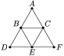

The tracks in a zoo form an equilateral triangle, in which the middle lines are drawn. A monkey ran away from its cage. Two guards try to catch the monkey. Will they be able to catch the monkey if all three of them can run only along the tracks, and the speed of the monkey and the speed of the guards are equal and they can always see each other?

First, let the first guard come running to the top of B, and the second to C. Let the monkey find itself on one side of the triangle ABC. If the monkey is on BC, the guards move towards each other along the track BC. If the monkey is on AB or AC, the guard catches the monkey, as it is moving to the top corner at A. Let this not happen. Without loss of generality, we can assume that the monkey is in the right half of the zoo, that is, on one side of the triangle CEF. Next, the first guard runs to the corner E, and the second is at the vertex C. When the first guard reaches the corner of E, the monkey either remains in the right half of the zoo, or is on the DE segment. In the first case, the guard is caught by the monkey, acting in the same way as described above for the triangle ABC. In the second case, the second guard runs to the corner B. When he runs, the monkey is on one of the segments BD or DE, and the guard catches it when moving to D.
Yes they can.
Compare with problem number 78751.